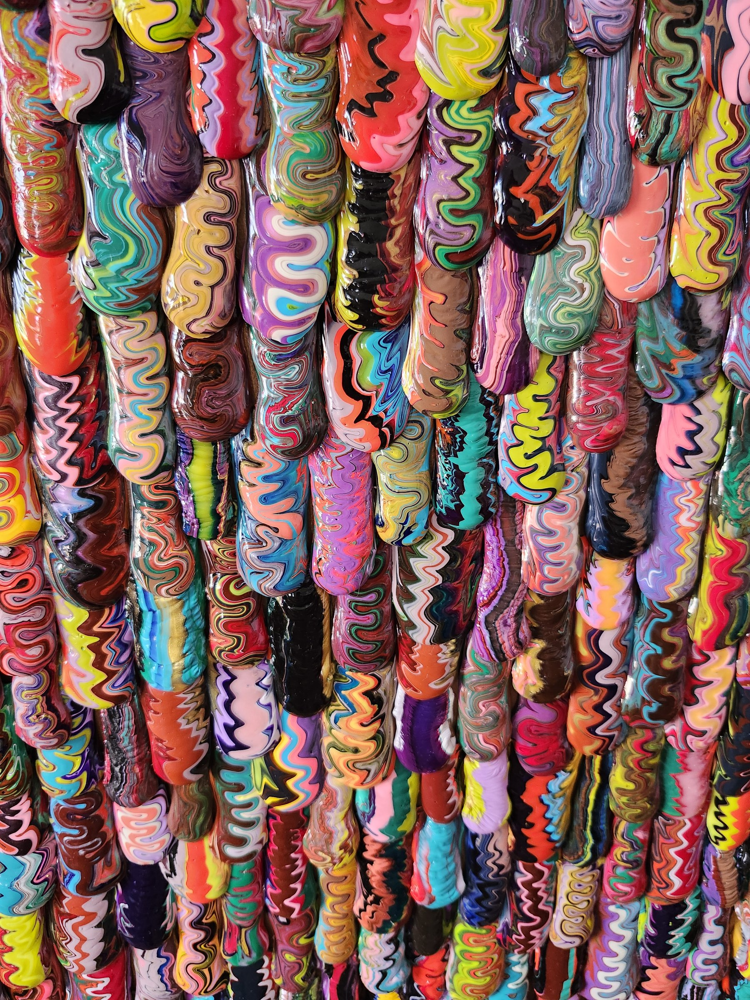
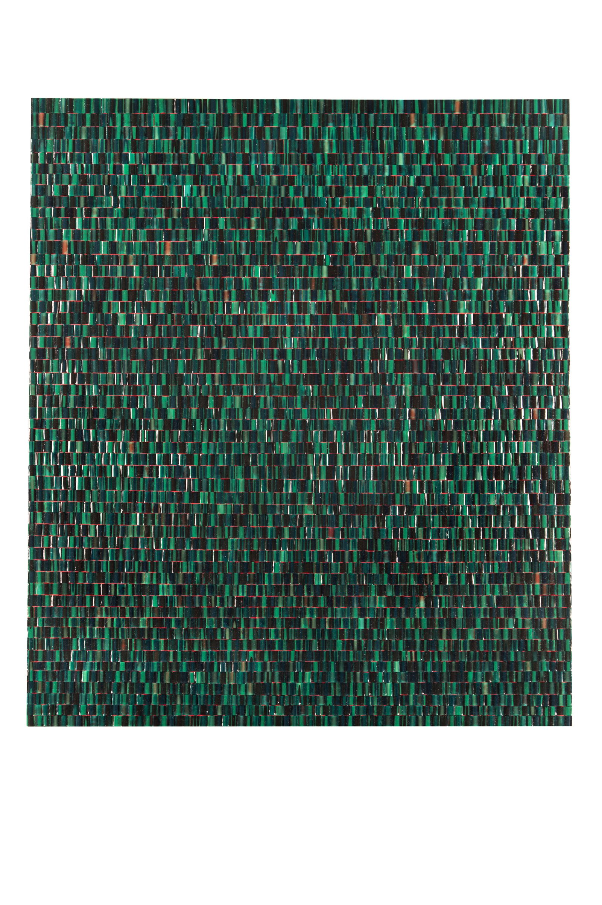
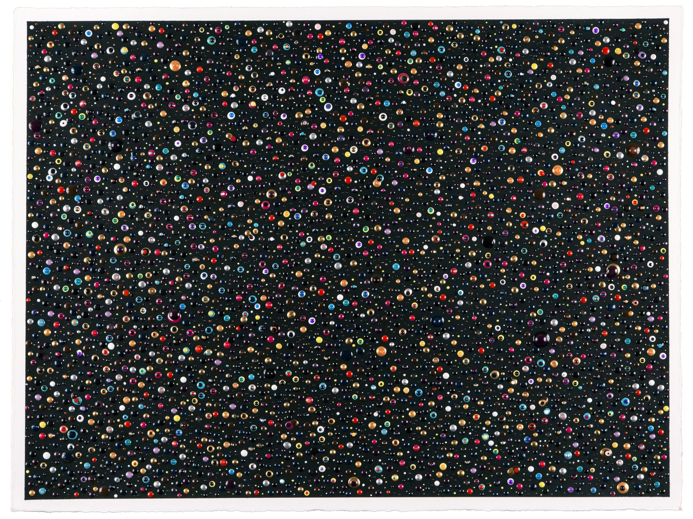
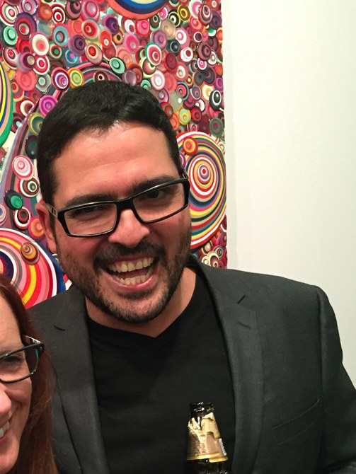

Paintings
Hand-cast acrylic, every piece. Filter by year, size, or surface.
No works match those filters.
Resume

Omar Chacón was born in Bogotá, Colombia and moved to the United States with his family as a child. He earned a BFA from Ringling College of Art and Design and an MFA in painting from the San Francisco Art Institute. He lives and works in Queens, New York.
His signature method began with a memory: his self-taught grandfather painting small abstract dots. Those dots became colorful lozenges and discs — read as aerial views of people, mixing, multiplying, and taking over the surface. The work draws on the folk art and indigenous textiles of South America and the mestizo fusion of Latin American life, with recent series turning to the imperial purples and golds of Ancient Rome.
Acrylic is poured onto wax paper and left to dry into thousands of brightly colored ovals and drips — each one finding its own edge. Once dry, every shape is hand-peeled into a unique building block, then layered onto the canvas. A brush is never used.
Chacón is represented by Robischon Gallery (Denver). His work has also been shown with Margaret Thatcher Projects (New York), Fouladi Projects (San Francisco), and Brunnhofer Galerie (Linz, Austria).
Education, awards, exhibitions, commissions, and press.
Press
Selected reviews, features, and writing on the paintings — with original scans and full pieces below.
“Geometric and organic elements build intricate compositions that beckon the viewer to take a closer look.”
Robischon Gallery
“A brush is never used. The dried acrylic forms become pliable building blocks — the basis of his paintings.”
Fouladi Projects
“Insistently physical and overtly time-intensive — slow collaborations between maker and material.”
DeWitt Cheng · East Bay Express
“Paint pouring on a separate surface that, once dried, migrates to the canvas in mosaic-like tiles — invoking concepts of the masses.”
Ringling College
Original press clippings — click any page to read it full size.
Installations
The work hanging in space — selected solo exhibitions. Click any view to enlarge.
Robischon Gallery, Denver · 2022
Margaret Thatcher Projects, New York · 2021
Press release (PDF) ↗News
No exhibitions are currently scheduled. New shows, openings, and announcements will appear here.
Contact
For studio visits, acquisitions, and exhibition inquiries.